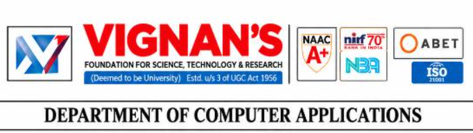

🎓
About the Programme
The MCA is a 2-year postgraduate programme designed to provide practical knowledge of computer applications and software development, with emphasis on current and emerging areas of Computer Science and Technology.

MCA Course & Curriculum Portal
A static academic portal for the Master of Computer Applications programme, presenting programme information, semester-wise subjects, syllabus highlights, academic framework and course outcomes.
Master of Computer Applications — C25
The MCA is a 2-year postgraduate programme designed to provide practical knowledge of computer applications and software development, with emphasis on current and emerging areas of Computer Science and Technology.
To emerge as a renowned centre in computer applications for providing high-quality education and research to produce globally competent professionals with ethical values.
Develop cutting-edge technical skills to succeed in career and as an entrepreneur.
Pursue higher education and research with critical thinking and problem-solving capabilities.
Demonstrate ethical, collaborative and leadership abilities in multidisciplinary domains.
Semester-wise course structure
| Code | Course Title | L | T | P | C | Category |
|---|---|---|---|---|---|---|
| 25MC401 | Data Structures | 2 | 2 | 2 | 4 | Professional Core |
| 25MC402 | Python Programming | 2 | – | 2 | 3 | Professional Core |
| 25MC403 | Web Technologies | – | 2 | 2 | 2 | Professional Core |
| 25MC404 | Computer Organization and Operating Systems | 3 | 2 | – | 4 | Professional Core |
| 25MC405 | Probability and Statistics | 3 | 2 | – | 4 | Basic Science |
| 25MC406 | Software Engineering | 2 | 2 | – | 3 | Professional Core |
| 25MC407 | Technical English Communication | 1 | – | 2 | 2 | Humanities |
| Code | Course Title | L | T | P | C | Category |
|---|---|---|---|---|---|---|
| 25MC408 | Database Systems | 3 | – | 2 | 4 | Professional Core |
| 25MC409 | Object Oriented Programming | 3 | – | 2 | 4 | Professional Core |
| 25MC410 | Computer Networks | 2 | 2 | – | 3 | Professional Core |
| 25MC411 | Organization Behavior | 2 | 2 | 0 | 3 | Management |
| 25MC412 | Soft Skills Laboratory | – | – | 2 | 1 | Humanities |
| 25MC413 | Socially Relevant Project using Design Thinking | – | – | 4 | 2 | Project |
| — | Department Elective – 1 | 3 | 0 | 2 | 4 | Elective 1 |
| — | Department Elective – 2 | 2 | – | 2 | 3 | Elective 2 |
| 25MC414 | Indian Knowledge System | – | 2 | – | 1 | Binary Graded |
| Code | Course Title | L | T | P | C | Category |
|---|---|---|---|---|---|---|
| 25MC501 | Cryptography & Network Security | 3 | – | 2 | 4 | Professional Core |
| 25MC502 | Full Stack Technologies | 3 | – | 2 | 4 | Professional Core |
| 25MC503 | Big Data Analytics | 3 | – | 2 | 4 | Management |
| — | Department Elective – 3 | 3 | – | 2 | 4 | Elective 3 |
| — | Department Elective – 4 | 3 | – | 2 | 4 | Elective 4 |
| — | MOOCs / NPTEL / Department Elective | – | – | – | 2 | Elective |
| Code | Course Title | L | T | P | C | Category |
|---|---|---|---|---|---|---|
| 25MC504 / 25MC505 | Internship / Project | – | 2 | 22 | 12 | Project |
Course-wise syllabus highlights from the supplied MCA R25/C25 curriculum document
Module 1: Basic C programming, data types, operators, control statements, arrays, strings, pointers, structures, sorting and searching.
Module 2: Linked lists, stacks, queues, trees, binary search trees, graphs, adjacency representations, BFS and DFS.
Module 1: Python installation, identifiers, keywords, variables, operators, data types, type conversion, indentation, control flow, strings, lists, tuples, sets, dictionaries, functions, modules and packages.
Module 2: Text/binary/CSV files, exceptions, object-oriented programming, classes and objects, NumPy, Pandas and Matplotlib, with practical Python programming.
Module 1: WWW, browsers, web servers, web architecture, HTML/HTML5, links, tables, forms, frames and CSS.
Module 2: JavaScript and DOM, PHP, form/file handling, sessions, WAMP/PhpMyAdmin, MySQL connectivity, Git/GitHub, GitHub Pages and Figma.
Computer Organization: Register transfers, bus and memory transfers, arithmetic/logic/shift micro-operations, instruction codes, CPU, addressing modes, cache memory and I/O organization.
Operating Systems: OS concepts, processes, CPU scheduling, synchronization, deadlocks, memory management, paging, segmentation and virtual memory.
Descriptive statistics, central tendency, dispersion and skewness; probability, conditional probability and Bayes theorem; random variables; Binomial, Poisson and Normal distributions; correlation, regression and hypothesis testing including chi-square tests.
SDLC and process models, Agile/Scrum, requirements engineering, SRS, feasibility study, UML-based analysis/design, software testing, risk management, quality assurance, configuration management and testing tools.
Module 1: Effective communication, communication barriers, digital communication, vocabulary, grammar, skimming/scanning, paragraph writing, summarizing, note making/taking and speaking practice.
Module 2: Disruptive technologies and ethical implications; clean energy; precision agriculture; entrepreneurship and start-up culture; report/letter/e-mail writing, data interpretation, listening and group discussion.
Database architecture and data modelling, ER/EER diagrams, relational models and integrity constraints, SQL, views, triggers and PL/SQL, normalization and functional dependencies, transaction management, concurrency control, file organization and NoSQL systems.
Module 1: JDK, JRE, JVM, bytecode, Java fundamentals, arrays, strings, classes, objects, constructors, overloading, access control, inheritance and packages.
Module 2: Abstract classes and interfaces, exception handling, multithreading, AWT/Applets/Swing, GUI event handling, Collection Framework and JDBC.
Module 1: Uses and types of computer networks, network technology, protocols, reference models, physical layer and guided/wireless transmission media.
Module 2: Data-link concepts, network-layer design and routing, congestion/QoS, IPv4/IPv6, ICMP/ARP, transport protocols TCP/UDP, DNS, electronic mail and WWW.
Module 1: Nature and scope of Organizational Behavior, contributing disciplines, organizational context, perception, personality, attitudes, Johari Window and Transactional Analysis.
Module 2: Group dynamics, group development, cohesiveness, stress management, learning and reinforcement, organizational behavior modification, conflict dynamics and conflict-management approaches.
Personality development and self-management, employability skills, career planning, SWOT analysis, Johari Window, goal setting, time management and stress management.
Communication skills, role-play, formal/semi-formal/informal communication, group discussions, résumé preparation, Statement of Purpose, presentation skills, mock interviews and workplace communication.
This curriculum component is a project course using design thinking to address a socially relevant problem. The course structure identifies it as a practical project component in Semester II.
Module 1: Definition, scope and significance of Indian Knowledge Systems; fields of study; Vedic, Buddhist, Jain and other traditions; major schools of thought; early contributions in mathematics, astronomy and medicine; Nalanda and Takshashila.
Module 2: Discipline-specific IKS, relevance to modern science and technology, preservation challenges, sustainable practices in agriculture/water/medicine and environmental ethics.
Cybersecurity, information security and network security; classical and modern cryptography; DES/AES; RSA, Diffie–Hellman, ElGamal and ECC; hashes, MACs and digital signatures; TLS/SSL, secure email, IPsec, intrusion detection and IoT/cloud security.
Full-stack development from front-end design and user interfaces through server-side programming, database management and deployment.
The syllabus includes Java/JSP-JDBC integration, React, AngularJS, ASP.NET MVC/ADO.NET, Node.js, Express.js, MySQL and MongoDB/Mongoose CRUD operations.
Module 1: Big Data characteristics, sources, unstructured data, evolution, challenges, business intelligence, Data Science and analytics.
Distributed analytics: Hadoop, HDFS, YARN, MapReduce, combiners/partitioners, Hive, Pig, ETL, HQL, Pig Latin and Spark/RDD-based analytics with scalable data processing.
The final semester is structured around the Internship/Project component. The curriculum foreword specifies a six-month industry internship as a programme feature.
The supplied curriculum document contains detailed individual syllabi for these electives. This catalogue keeps the portal concise while ensuring that every elective is represented.
Programme framework stated in the supplied C25 curriculum document
The MCA is described as a two-year postgraduate degree programme.
22 + 25 + 21 + 12 credits across the four semesters.
The curriculum includes a six-month industry internship to prepare students for the workforce.
The foreword identifies various exit options as a feature of the R25 curriculum.
The curriculum states that revisions are aligned with the National Education Policy 2020.
Practical activities and embedded practice sessions are incorporated across the curriculum.
This portal presents the academic framework explicitly available in the supplied MCA C25 curriculum PDF. Detailed university rules such as attendance thresholds, grading conversion, examination regulations or promotion conditions should be added only from the university's applicable academic-regulations document if they are required.
Expanded course-outcome coverage for the structured MCA courses
Provide solutions for complex computational problems with requisite mathematical, programming languages and tools.
Design, develop and analyze software and services for real-time applications using advanced techniques and innovative solutions.
Apply mathematics, programming logic and coding fundamentals for solution architecture and problem solving.
Identify, review, formulate and analyze problems with focus on customer requirements using critical thinking.
Design, develop and investigate problems using innovative approaches incorporating ESG/SDG goals.
Select, adapt and apply modern computational tools while understanding their limitations and human biases.
Function and communicate effectively as an individual or team leader in diverse multidisciplinary groups using methodologies such as Agile.
Use project-management principles such as scheduling and work breakdown structure and understand finance for profitable project management.
Commit to professional ethics in managing software projects and learn technologies for cybersecurity and malware protection.
Develop change-management skills and the ability to learn and keep up with contemporary technologies and ways of working.
MCA C26 combines core computing knowledge, practical work, electives, projects and industry exposure.
Back to Top